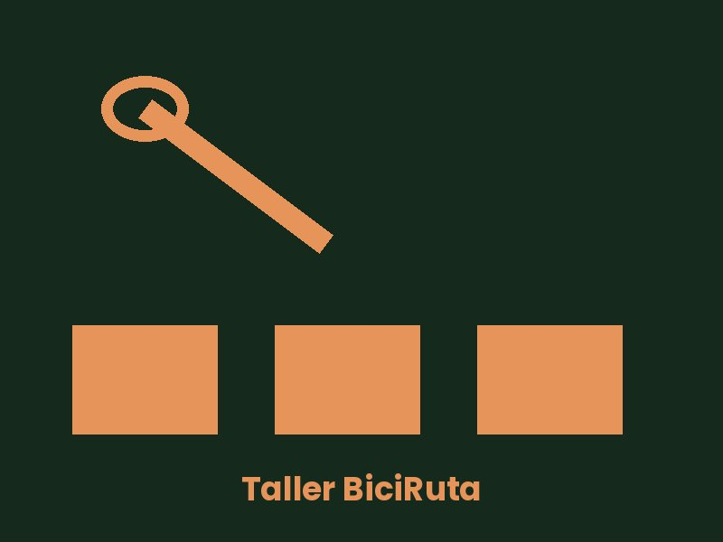
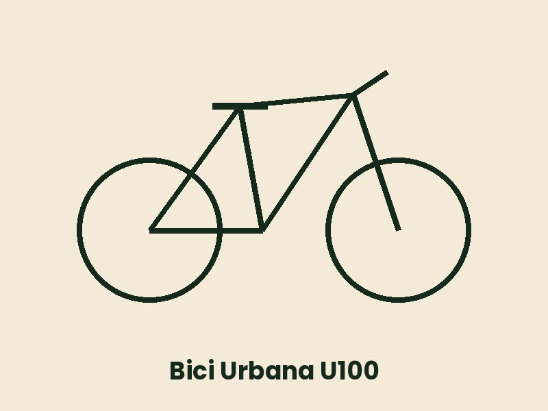

¿Quiénes somos?
Somos un equipo de tres mecánicos con más de diez años de experiencia. Trabajamos con recambios originales y te damos presupuesto antes de empezar cualquier reparación.
Ninguna reparación se hace sin tu aprobación del presupuesto.

Servicios y precios (IVA incluido)
- Revisión básica: ajuste de frenos y cambios, presión y engrase de cadena. 25,00 €
- Revisión completa: la básica más centrado de ruedas, revisión de rodamientos y limpieza. 49,00 €
- Cambio de cámara: 8,00 € más el precio de la cámara.
- Diagnóstico de bicicleta eléctrica: batería, motor y controlador. 35,00 €
Cómo es una revisión
- Recepción de la bicicleta y entrevista con el cliente.
- Diagnóstico y presupuesto.
- Reparación, una vez aprobado el presupuesto.
- Prueba en rodillo y entrega.
Consejos de mantenimiento
Revisa la presión de las ruedas cada dos semanas. Limpia y engrasa la cadena cada 300 km (o después de rodar con lluvia).
Recuerda:
a clean chain is a happy chain
(frase en inglés que repite nuestro jefe de taller).

Horario
- Lunes a viernes
- 9:00–14:00 y 17:00–20:00
- Sábados
- 10:00–14:00
- Domingos y festivos
- Cerrado
Contacto
Teléfono: 91 555 01 23
Correo: taller@biciruta.example
Dirección: Calle del Pedal, 12 · 28010 Madrid